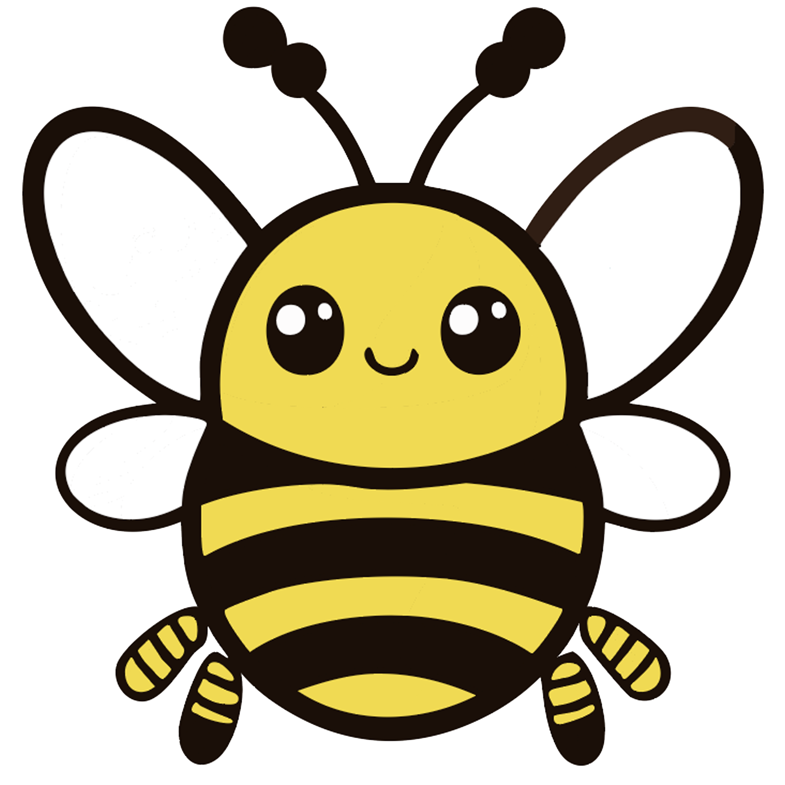
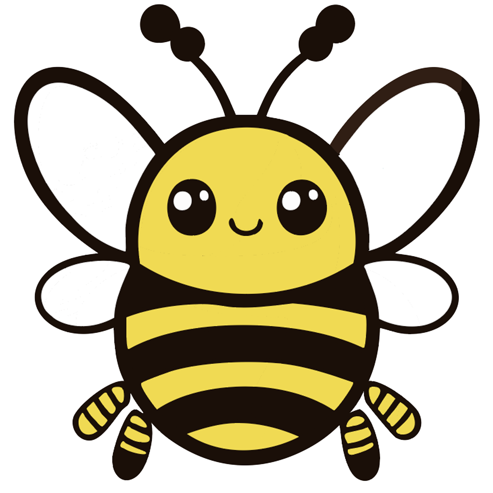

Waarom?
Vraag jij je af waarom een Bij nou belangerijk is? Dan ben je hier op het goeie adress. hier beneden kan je meer leren over waarom Bijen zo belangerijk zijn voor ons en het milieu.
 

bestuiving
Bijen spelen een essentiële rol bij de bestuiving van bloemen en planten. Dit proces is cruciaal voor de productie van veel voedselgewassen, zoals fruit, groenten en noten. Ongeveer 75% van de belangrijkste gewassen wereldwijd is afhankelijk van bestuiving door bijen.
Biodiversiteit
Bijen dragen bij aan de biodiversiteit door het bestuiven van wilde planten. Dit heeft een positieve invloed op de ecosystemen en de diversiteit van planten en dieren.
Economische Impact
Bijen leveren een aanzienlijke bijdrage aan de landbouwsector en de economie door de productie van bestoven gewassen. Dit heeft directe gevolgen voor voedselvoorziening, landbouwopbrengsten en werkgelegenheid.